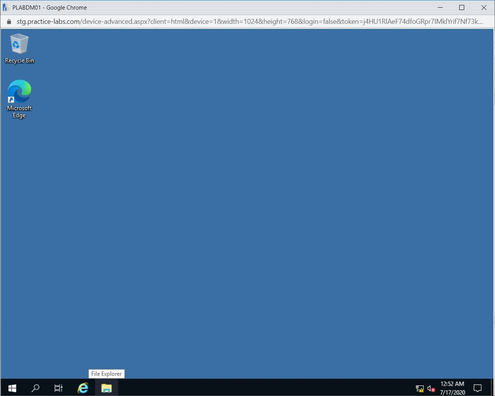

Introduction
9beca326-b493-4b0e-b3dc-d7dfb77df3c9
Welcome to the Infrastructure Security Practice Lab. In this module, you will be provided with the instructions and devices needed to develop your hands-on skills.
dc640c20-9434-45ea-b7c2-6d4d6a196bfc
Learning Outcomes
In this module, you will complete the following exercises:
- Exercise 1 - Set up a Honeypot with Pentbox
- Exercise 2 - Data Collector Sets
- Exercise 3 - Configuring Alerts for Data Collector Sets
- Exercise 4 - Enable EFS on Standalone Windows Computer
After completing this lab, you will be able to:
- Download and Install Pentbox
- Modify Proxy Server Exceptions in PLABWIN10
- Test Honeypot Functionality
- Create Data Collector Sets
- Create a Schedule
- Configure Alerts
- Remove Windows Computer from the Domain
- Create a Local User for Testing Local EFS
- Allow Log on to the System via Remote Desktop
- Create Folder, File, and Enable EFS
- View EFS Permission
- View the Effect of Copying or Moving Files on Encryption
- Decrypt Files
Exam Objectives
The following exam objectives are covered in this lab:
- 2.1 Given a scenario, apply security solutions for infrastructure management.
Note: Our main
focus is to cover the practical, hands-on aspects of the exam
objectives. We recommend referring to course material or a search engine
to research theoretical topics in more detail.
Lab Duration
It will take approximately 1 hour to complete this lab.
7ca097e1-3b9c-4203-a9a2-3215787353ca
Help and Support
For more information on using Practice Labs, please see our Help and Support page. You can also raise a technical support ticket from this page.
Click Next to view the Lab topology used in this module.
d2c53300-f951-45a9-9aa4-3d4ecae69e11
Lab Topology
During your session, you will have access to the following lab configuration.

Depending on the exercises, you may or may not use all
of the devices, but they are shown here in the layout to get an overall
understanding of the topology of the lab.
- PLABDC01 - (Windows Server 2019 - Domain Server)
- PLABDM01 - (Windows Server 2019 - Domain Member)
- PLABKALI01 - (Kali Server 2019 - Linux Kali)
- PLABWIN10 - (Windows 10 - Domain Member Workstation)
- PLABCENTOS - (Centos 8 Linux - Stand-alone Linux Server)
- PLABALIENVAULT - (Alien Vault Linux Security Management Platform)
Click Next to proceed to the first exercise.
<
Home |
README >
CompTIA Cybersecurity Analyst (CySA+) Practice Labs
Exercise 1 - Set up a Honeypot with Pentbox
A honey pot is a decoy, or a trap created by
organizations to attract hackers into a computer system. One of the main
objectives of using a honeypot is to monitor the hacker exploit the
vulnerabilities of the system, then subsequently learn the weaknesses of
the system and apply the necessary security measures to strengthen it
from future attacks.
In this lab, you will learn how to use a program
called Pentbox to create a basic honeypot system and test it using a
standard web browser to detect an intrusion.
Learning Outcomes
After completing this exercise, you will be able to:
- Download and Install Pentbox
- Modify Proxy Server Exceptions in PLABWIN10
- Test Honeypot Functionality
Your Devices
You will be using the following devices in this lab. Please power these on now.
- PLABDC01 - (Windows Server 2019 - Domain Server)
- PLABKALI01 - (Kali Server 2019 - Linux Kali)
- PLABWIN10 - (Windows 10 - Domain Member Workstation
Task 1 - Download and Install Pentbox
Pentbox is a suite that has various security tools to
streamline the security activities in your network. You can use it for
various purposes, such as setting up a honeypot. In this task, you will
download and install a program called Pentbox then set up a basic
honeypot in a Kali Linux device. To do this, perform the following
steps:
Step 1
Ensure you have powered on the required devices and connect to PLABKALI01.
The PLABKALI01 desktop is displayed.
Step 2
On the desktop, in the left pane, click the Terminal icon.
Figure 1.2 Screenshot of PLABKALI01: Clicking the Terminal icon in the left pane.
Step 3
The terminal window is displayed. Before installing anything, we need to make sure that the keyring is added.
To add the keyring, type the following command:
wget -q -O - archive.kali.org/archive-key.asc | apt-key add
Press Enter.
Figure 1.3 Screenshot of PLABKALI01: Entering the wget command to add the keyring.
Step 4
You should receive a response stating OK.
Figure 1.4 Screenshot of PLABKALI01: Showing the response from the wget command.
Step 5
Once complete and back on the root@kali prompt, type the following command:
wget http://downloads.sourceforge.net/project/pentbox18realised/pentbox-1.8.tar.gz
Note: Please ignore the text wrap as you will need to enter a one-liner command to download the software.
Press Enter.
Figure 1.5 Screenshot of PLABKALI01: Entering the command to download the pentbox app typed-in.
Step 6
A confirmation will be displayed to indicate a successful download of the pentbox.
Figure 1.6 Screenshot of PLABKALI01: Displaying the successful installation of pentbox.
Step 7
Clear the screen by entering the following command:
clear
On the next prompt, to uncompress the pentbox files, type:
tar -zxvf pentbox-1.8.tar.gz
Press Enter.
Figure 1.7 Screenshot of PLABKALI01: Typing the command to uncompress the pentbox files.
Step 8
The pentbox files will be extracted in its folder.
Figure 1.8 Screenshot of PLABKALI01: Displaying the uncompressed pentbox files.
Step 9
On the next prompt, type the following to change to the pentbox folder:
cd pentbox-1.8/
Press Enter.
Figure 1.9 Screenshot of PLABKALI01: Typing the command to change the folder to pentbox.
Step 10
On the next prompt, to run pentbox type the following:
./pentbox.rb
Press Enter.
Figure 1.10 Screenshot of PLABKALI01: Typing the command to access the required file in the pentbox directory typed-in.
Step 11
From the Pentbox menu, type:
2
Press Enter.
Figure 1.11 Screenshot of PLABKALI01: Listing the pentbox menu and showing the required menu option typed-in.
Step 12
On the next menu screen, type the following:
3
Press Enter.
Figure 1.12 Screenshot of PLABKALI01: Listing the pentbox network tools menu and showing the required menu option typed-in.
Step 13
On the run Pentbox screen, type the following:
1
Press Enter.
Figure
1.13 Screenshot of PLABKALI01: Listing the conditions to run the
pentbox app and showing the required menu option typed-in.
Step 14
You will get a notification that the HONEYPOT ACTIVATED ON PORT 80.
Keep the terminal window running the Pentbox tool open.
Figure 1.14 Screenshot of PLABKALI01: Showing the auto-configuration of root privileges to run the pentbox app.
Task 2 - Modify Proxy Server Exceptions in PLABWIN10
All devices in the Practice Labs platform connect to a
proxy server. You need to add a proxy exception rule to ensure a
successful connection to a device found in the lab network.
To do this, perform the following steps:
Step 1
Connect to PLABWIN10. In the Type here to search textbox, type the following:
Internet Explorer
From the search results, select Internet Explorer.
Figure 1.15 Screenshot of PLABWIN10: Searching for Internet Explorer and then selecting it from the search results.
Step 2
At the far-right corner of the toolbar, click Tools (the cogwheel icon) and select Internet Options.
Figure
1.16 Screenshot of PLABWIN10: Clicking the Tools (cogwheel icon) and
then selecting the Internet options menu-option in the Web browser
window.
Step 3
On the Internet Options dialog box, click the Connections tab.
Figure 1.17 Screenshot of PLABWIN10: Clicking the Connections tab in the Internet Options dialog box.
Step 4
Under the Connections tab, next to Local Area Network (LAN) settings, click LAN settings.
Figure 1.18 Screenshot of PLABWIN10: Clicking the LAN settings dialog box.
Step 5
On the Local Area Network (LAN) Settings, ensure that the Bypass proxy server for local address checkbox is ticked.
Click Advanced.
Figure 1.19 Screenshot of PLABWIN10: Clicking the Advanced button on the Local Area Network (LAN) Settings dialog box.
Step 6
On the Proxy Settings dialog box, click on the provided text box and type:
;192*
Click OK.
Figure 1.20 Screenshot of PLABWIN10: Entering the exception in the Proxy Settings dialog box.
Step 7
Similarly, click OK on Local Area Network (LAN) Settings and Internet Options dialog boxes.
Figure 1.21 Screenshot of PLABWIN10: Clicking OK on the Internet Options dialog box.
Task 3 - Test Honeypot Functionality
After you have configured the honeypot, you need to
test its functionality. One of the simplest methods could be attempting
to access the Webserver that it is running. In this task, you will test
the functionality of the Pentbox honeypot. To do this, perform the
following steps:
Step 1
On PLABWIN10, the Internet Explorer window is open.
Click on the address bar and type:
http://192.168.0.3
Press Enter.
Figure 1.22 Screenshot of PLABWIN10: Entering the honeypot URL in the address bar in the Internet Explorer window.
Step 2
An “Access denied” message appears on the Webpage.
Figure 1.23 Screenshot of PLABWIN10: Displaying the Access denied message when access is attempted for a restricted IP address.
Step 3
Connect to PLABKALI01. Ensure that the terminal window is still open, and the pentbox is running.
The terminal window displays INTRUSION ATTEMPT DETECTED from 192.168.0.4:XXXXX.
Note: X’s have been inputted above as the number is likely to be different for you.
Using the Pentbox application, you have learned how honeypot systems work.
The administrator of the system where the honeypot is
deployed can take the appropriate measures to strengthen the defenses
of a computer system.
Figure 1.24 Screenshot of PLABKALI01: Showing the details of the attempted intrusion.
5552932f-e263-4095-bb6a-fa7be9031d50
Close all open windows on PLABKALI01 and PLABWIN10.
<
Home |
README >
CompTIA Cybersecurity Analyst (CySA+) Practice Labs
Exercise 2 - Data Collector Sets
In this exercise, you will use Performance Monitor to
collect data on important server resources like CPU, Memory, Disk, and
Network Interface. This free administrator utility can come handy
should you want to perform capacity planning and find out how the server
is performing under a specific workload. In this exercise, you will
learn to create a Data Collector Sets.
Learning Outcomes
After completing this exercise, you will be able to:
- Create Data Collector Sets
- Create a Schedule
Your Devices
You will be using the following devices in this lab. Please power these on now.

- PLABDC01 - (Windows Server 2019 - Domain Server)
- PLABDM01 - (Windows Server 2019 - Domain Member)
Task 1 - Create Data Collector Sets
Data collector sets is a useful feature of
Performance monitor as it allows administrators to collect data
unattended on important server resources. The collected statistics from
the target server can be imported into a chart view for further
analysis.
In this step, you will configure the data collector set and capture statistics on hardware components.
Step 1
Ensure you have powered on the required devices and connect to PLABDM01.
Go to Server Manager, then Tools menu, and select Performance Monitor.
Figure 2.1 Screenshot of PLABDM01: Selecting the Performance Monitor option from the Tools menu in Server Manager.
Step 2
Expand Data Collector Sets, right-click User Defined, select New, and then select Data Collector Set.
Figure 2.2 Screenshot of PLABDM01: right-clicking User Defined, selecting New and then selecting Data Collector Set.
Step 3
In the Create New Data Collector Set wizard, On the How would you like to create this new data collector set? page, in Name textbox type Off Peak Usage Test.
Select Create manually (Advanced) option. Click Next.
Figure 2.3 Screenshot of PLABDM01: Selecting Create manually (Advanced) option and then clicking Next.
Step 4
On the What type of data do you want to include? page, Create data logs is selected by default. Select Performance counters.
Click Next.
Figure 2.4 Screenshot of PLABDM01: Selecting Performance counter and clicking Next.
Step 5
On the Which performance counters would you like to log? page, click Add.
Figure 2.5 Screenshot of PLABDM01: Clicking Add to add new performance counters.
Step 6
From Available counters, select the following:
System Object Counter Instances
LogicalDisk %Free Space _Total
Click Add.
 Figure 2.6 Screenshot of PLABDM01: Selecting the Logical Disk counter and clicking Add.
Figure 2.6 Screenshot of PLABDM01: Selecting the Logical Disk counter and clicking Add.
Step 7
Notice that the counter is added in the right box.
 Figure 2.7 Screenshot of PLABDM01: Showing the added counter.
Figure 2.7 Screenshot of PLABDM01: Showing the added counter.
Step 8
You need to repeat the steps for the following counters:
Memory Pages/sec
Network Interface Bytes Total/sec All instances
Processor %Processor Time _Total
Click OK.
Figure 2.8 Screenshot of PLABDM01: Adding more counters in the Performance Monitor window.
Step 9
Back in which performance counters, change the Sample interval to 1 Second/s.
Choose Next.
Figure 2.9 Screenshot of PLABDM01: Changing the sample interval and clicking Next.
Step 10
On the Where would you like the date to be saved page, click Next to accept the default path.
Figure 2.10 Screenshot of PLABDM01: Accepting the default path for the data collection and clicking Next.
Step 11
On the Create the data collector set page, the Save and close option is selected by default. Click Finish.
Figure 2.11 Screenshot of PLABDM01: Keeping the default option of Save and close and clicking Finish.
Step 12
Now that you have completed the customized data collector set right-click on Off Peak Usage Test and selecting Start.
Let this custom data collector set run for about 1 minute to collect the necessary data.
Figure 2.12 Screenshot of PLABDM01: Right-clicking on Off Peak Usage Test and selecting Start.
Step 13
Right-click on Off Peak Usage Test and selecting Stop.
Figure 2.13 Screenshot of PLABDM01: Right-clicking on Off Peak Usage Test and selecting Stop.
Step 14
In Performance Monitor snap-in, click on Performance Monitor node in the left pane.
Select the Processor time, which is currently collecting data in real-time and press the Delete key.
Figure 2.14 Screenshot of PLABDM01: Selecting the Processor time and pressing the Delete key.
Step 15
Right-click on the empty chart view and select Properties.
Figure 2.15 Screenshot of PLABDM01: Right-clicking on the empty chart view and selecting Properties.
Step 16
In the Performance Monitor Properties dialog box, click the Source tab.
Figure 2.16 Screenshot of PLABDM01: Clicking the Source tab in the Performance Monitor Properties dialog box.
Step 17
Select the Log files option and click Add.
Figure 2.17 Screenshot of PLABDM01: Selecting the Log files option and clicking Add.
Step 18
In Select Log File dialog box, browse to C:\Perflogs\Admin\Off Peak Usage Test\PLABDM01_date_number
Note: date_number is specific to when you started the data collector set.
Select DataCollector01 and selecting Open.
Figure 2.18 Screenshot of PLABDM01: Selecting DataCollector01 and selecting Open.
Step 19
The Performance Monitor Properties dialog box now displays the log file created earlier. Click Apply.
Figure 2.19 Screenshot of PLABDM01: Clicking Apply on the Performance Monitor Properties dialog box.
Step 20
You can see here the Time Range indicating the start and end time of the log file. Click OK when done.
Figure 2.20 Screenshot of PLABDM01: Clicking OK on the Performance Monitor Properties dialog box.
Step 21
Next, you need to import the performance object and their counters.
Right-click in the right pane and select Add Counters.
Figure 2.21 Screenshot of PLABDM01: Right-clicking in the right pane and selecting Add Counters.
Step 22
In the Add Counters dialog box, expand each system object to view their corresponding counters.
Add the following object counters.
Logical Disk: %Free Space
Memory: Pages/sec
Network Interface: Bytes Total/sec
Processor: %Processor time
Click OK when done adding.
Figure 2.22 Screenshot of PLABDM01: Adding the counters in the Add Counters dialog box.
Step 23
Performance Monitor now displays the chart view of the data collector set that captured statistics on Processor, Memory, Network Interface, and Logical Disks.
Figure 2.23 Screenshot of PLABDM01: Showing the added counters with their performance in the Performance Monitor.
Keep all devices powered on in their current state and proceed to the next task.
Task 2 - Create a Schedule
To create a schedule for the collector logs, perform the following steps:
Step 1
On PLABDM01, while Performance Monitor is open, right-click on Off Peak Usage Test and select Properties.
Figure 2.24 Screenshot of PLABDM01: Right-clicking on Off Peak Usage Test and selecting Properties.
Step 2
In the Off Peak Usage Test Properties dialog box, click the Schedule tab.
Figure 2.25 Screenshot of PLABDM01: Clicking the Schedule tab in the Off Peak Usage Test Properties dialog box.
Step 3
On the Schedule tab, click Add.
Figure 2.26 Screenshot of PLABDM01: Clicking Add on the Schedule tab.
Step 4
In Folder Action dialog box, use the following information:
Beginning date: Today’s date
Expiration date: 1 week from today’s date
Start time: 12:00:00 AM
Click OK.
Figure 2.27 Screenshot of PLABDM01: Adding the schedule information and clicking OK in the Folder Action dialog box.
Step 5
On the Off Peak Usage Test Properties dialog box, click OK.
Figure 2.28 Screenshot of PLABDM01: Clicking OK on the Off Peak Usage Test Properties dialog box.
411a5c2f-ba12-47c9-86e1-164c6b021ebe
Note: If prompted for user credentials, then use the practicelabs\administrator as the user and Passw0rd as the password.
Keep all devices powered on in their current state and proceed to the next exercise.
<
Home |
README >
CompTIA Cybersecurity Analyst (CySA+) Practice Labs
Exercise 3 - Configuring Alerts for Data Collector Sets
Alerts are a key feature when working with Data
Collector Sets. They work to highlight certain key points of information
when a system is beginning to show signs of stress, allowing am
administrator to review and address the problem.
Alerts watching the CPU will highlight it’s stress
load, which informs the administrator to review the level which might be
undergoing a distributed denial-of-service of attack, or a virus is
deliberately overloading the CPU to prevent availability.
In this exercise, you will learn to configure alerts.
Learning Outcomes
After completing this exercise, you will be able to:
Your Devices
You will be using the following devices in this lab. Please power these on now.

- PLABDC01 - (Windows Server 2019 - Domain Server)
- PLABDM01 - (Windows Server 2019 - Domain Member)
Task 1 - Configure Alerts
The alert feature in the Data collector set is a
feature that logs an event in Event Viewer that gives information to the
systems administrator when a hardware resource has reached its
threshold level. In this task, you will configure Alerts in the Data
Collector Set. To do this, perform the following steps:
Step 1
On the PLABDM01 device, go to right-click User Defined, select New, and then select Data Collector Set.
Figure 3.1 Screenshot of PLABDM01: Right-clicking User Defined, selecting New, and then selecting Data Collector Set.
Step 2
In the Create new Data Collector set wizard, click in the Name text box and type Processor Alert Test, then select the Create manually (Advanced) option.
Figure
3.2 Screenshot of PLABDM01: Clicking in the Name text box and typing
Processor Alert Test, then selecting the Create manually (Advanced)
option.
Step 3
On the What type of data you want to include? page, select the Performance Counter Alert option.
Click Next.
 Figure 3.3 Screenshot of PLABDM01: Selecting the Performance Counter Alert option and clicking Next.
Figure 3.3 Screenshot of PLABDM01: Selecting the Performance Counter Alert option and clicking Next.
Step 4
On the Which performance counters would you like to monitor? page, select Add.
Figure 3.4 Screenshot of PLABDM01: Clicking Add to add new counters.
Step 5
Select Processor object, then click on %Processor Time, under Instances of selected object, select _Total if already not selected, and click Add.
Figure 3.5 Screenshot of PLABDM01: Selecting the processor counter and clicking Add.
Step 6
The counter is now added in the right box. Click OK.
Figure 3.6 Screenshot of PLABDM01: Clicking OK after adding the processor counter.
Step 7
Back in Which performance counters would you like to monitor, ensure that Alert when drop-down is set to Above. In the Limit textbox, enter 2.
Click Next.
Figure 3.7 Screenshot of PLABDM01: Setting the limit for the counter and clicking Next.
Step 8
On the Create the data collector set? page, keep the default selection of Save and close, and then click Finish.
Figure 3.8 Screenshot of PLABDM01: Keeping the default selection of Save and close, and then clicking Finish.
Step 9
Under the User Defined node, click Processor Alert Test, then in the right pane, right-click DataCollector01, and select Properties.
 Figure 3.9 Screenshot of PLABDM01: Right-clicking DataCollector01 and selecting Properties.
Figure 3.9 Screenshot of PLABDM01: Right-clicking DataCollector01 and selecting Properties.
Step 10
In the Alerts tab, change sample interval to 1 Second/s.
Click Apply.
Figure 3.10 Screenshot of PLABDM01: Change sample interval to 1 Second/s and then clicking Apply.
Note: If prompted for user credentials, then use the practicelabs\administrator as the user and Passw0rd as the password.
Step 11
Click the Alert Action tab.
Figure 3.11 Screenshot of PLABDM01: Clicking the Alert Action tab.
Step 12
In the Alert Action tab, select Log an entry in the application log checkbox.
In Start a data collector set drop-down list, selecting Processor Alert Test.
Click OK to close.
Note: If prompted for user credentials, then use the practicelabs\administrator as the user and Passw0rd as the password.
Figure 3.12 Screenshot of PLABDM01: Selecting Processor Alert Test from the drop-down and clicking OK to close.
Step 13
Right-click on Processor Alert Test and select Start.
Figure 3.13 Screenshot of PLABDM01: Right-clicking on Processor Alert Test and selecting Start.
Step 14
You will now create some activity on this computer to simulate a processor being stressed.
Click the Start charm, expand CPUID, and then select CPU-Z.
Figure 3.14 Screenshot of PLABDM01: Clicking the Start charm, expanding CPUID, and then selecting CPU-Z.
Step 15
When prompted with the User Account Control dialog box, click Yes.
Figure 3.15 Screenshot of PLABDM01: Clicking Yes on the User Account Control dialog box.
Step 16
Note: If you are prompted with the CPU-Z update, click OK.
The CPU-Z dialog box is displayed.
Figure 3.16 Screenshot of PLABDM01: Showing the CPU-Z start-up screen.
Step 17
Click the Bench tab. Once you are on the Bench tab, click Stress CPU.
Figure 3.17 Screenshot of PLABDM01: Clicking the Bench tab and then clicking Stress CPU.
Step 18
The CPU stressing process starts.
Figure 3.18 Screenshot of PLABDM01: Showing the CPU stress process starting.
Step 19
Let the program run for about 1 minute. Click Stop and then close CPU-Z. Ensure that the Performance Monitor is still running.
 Figure 3.19 Screenshot of PLABDM01: Clicking Stop and then closing CPU-Z.
Figure 3.19 Screenshot of PLABDM01: Clicking Stop and then closing CPU-Z.
Step 20
Go back to Performance Monitor and right-click on Processor Alert Test, then select Stop.
Figure
3.20 Screenshot of PLABDM01: Right-clicking on Processor Alert Test,
then selecting Stop in the Performance Monitor window.
Step 21
Next is to view the logged event regarding Processor time reaching its threshold level. Open Server Manager, go to Tools and select Event Viewer.
Figure 3.21 Screenshot of PLABDM01: Opening Server Manager, clicking Tools, and selecting Event Viewer.
Step 22
In Event Viewer, navigate to Applications and Services Logs > Microsoft > Windows > Diagnosis PLA > Operational.
Figure
3.22 Screenshot of PLABDM01: Navigating to Applications and Services
Logs > Microsoft > Windows > Diagnosis PLA > Operational in
Event Viewer.
Step 23
Look for Event ID 2031 and read the description in the General tab. Notice that the Processor Time has tripped its alert threshold.
Figure 3.23 Screenshot of PLABDM01: Showing the event details.
411a5c2f-ba12-47c9-86e1-164c6b021ebe
Close all open windows and click the Next button to proceed.
<
Home |
README >
CompTIA Cybersecurity Analyst (CySA+) Practice Labs
Exercise 4 - Enable EFS on Standalone Windows Computer
Encrypting File System (EFS) is a security feature
built into Windows that helps secure personal folders and files on a
workstation. EFS uses a strong encryption algorithm called DESX. DESX is
a variant of the Data Encryption Standard (DES) of the US government.
A Windows user encrypts a folder, including the files
within it using a certificate and a key retrieved from the user
profile. In this exercise, you will manage an EFS certificate to encrypt
and decrypt files on a non-domain joined computer.
To learn more about managing EFS on a standalone
Windows computer, please refer to your course material or use your
preferred search engine to research this topic in more detail.
Learning Outcomes
After completing this exercise, you will be able to:
- Remove Windows Computer from the Domain
- Create a Local User for Testing Local EFS
- Allow Log on to the System via Remote Desktop
- Create Folder, File, and Enable EFS
- View EFS Permission
- View the Effect of Copying or Moving Files on Encryption
- Decrypt Files
Your Devices
You will be using the following devices in this lab. Please power these on now.
- PLABDM01 - (Windows Server 2019 - Domain Member)
Task 1 - Remove Windows Computer from the Domain
To demonstrate how Encrypting File System works on
the standalone server, a member computer must be removed first from a
Windows Active Directory domain.
In this task, you will remove a domain server from the lab domain called PRACTICELABS.COM.
Step 1
Ensure you have powered on the required devices defined in the introduction and connect to PLABDM01.
Right-click the Windows charm and select Windows PowerShell (Admin).
Figure 4.1 Screenshot of PLABDM01: Right-clicking the Windows charm and selecting Windows PowerShell (Admin).
Step 2
In the User Account Control dialog box, click Yes.
Figure 4.2 Screenshot of PLABDM01: Clicking Yes in the User Account Control dialog box.
Step 3
To remove PLABDM01 from the current Windows domain, type:
Remove-Computer
Press Enter.
Figure 4.3 Screenshot of PLABDM01: Entering the command to remove the system from the domain.
Step 4
In the next prompt, type the following:
y
Press Enter.
Figure 4.4 Screenshot of PLABDM01: Confirming the removal of the system from the domain by entering Y.
Step 5
To restart PLABDM01, type the following command:
Restart-Computer
Press Enter.
Figure 4.5 Screenshot of PLABDM01: Entering the command to restart the system.
Note: PLABDM01 will take at least a minute to start.
Task 2 - Create a Local User for Testing Local EFS
Since there are no regular users on the standalone
Windows server other than the Administrator, you will create a local
user that will be used for testing EFS. To do this, perform the
following steps:
Step 1
Connect to PLABDM01. Close the Server Manager window.
On PLABDM01, right-click Start and click Computer Management.
Figure 4.6 Screenshot of PLABDM01: Right-clicking Start and clicking Computer Management.
Step 2
On the Computer Management window, expand Local Users and Groups then click Users.
Right-click Users then click New User.
Figure 4.7 Screenshot of PLABDM01: Right-clicking Users then click New User in the Computer Management Window.
Step 3
On the New User dialog box, In the User name text box, type:
Fred
In the Password and Confirm password text boxes, type:
Passw0rd
Clear User must change password at next logon box.
Then click Create.
Figure 4.8 Screenshot of PLABDM01: Entering the details for the new user and clicking Create on the New User dialog box.
Step 4
Click Close to exit the New User dialog box.
Figure 4.9 Screenshot of PLABDM01: Clicking Close to close the New User dialog box.
Step 5
Close Computer Management window.
Figure 4.10 Screenshot of PLABDM01: Closing the Computer Management window.
Task 3 - Allow Log on to the System via Remote Desktop
To be able to connect to the devices in this lab, a user must be permitted to connect to the devices via Remote Desktop.
In this task, you will permit a group called
Authenticated Users to connect to PLABDM01 via Remote Desktop. To do
this, perform the following steps:
Step 1
On PLABDM01, right-click Start and select System.
Figure 4.11 Screenshot of PLABDM01: Right-clicking Windows charm and selecting System.
Step 2
On the System window, click Remote Desktop in the left pane.
Figure 4.12 Screenshot of PLABDM01: Clicking Remote Desktop in the left pane.
Step 3
In the right pane, scroll down and click Select users that can remotely access this PC in the User accounts section.
Figure 4.13 Screenshot of PLABDM01: Clicking Select users that can remotely access this PC in the User accounts section.
Step 4
On the Remote Desktop Users dialog box, click Add.
Figure 4.14 Screenshot of PLABDM01: Clicking Add on the Remote Desktop Users dialog box.
Step 5
On the Select Users dialog box, type the following in the Enter the object names to select text box:
authenticated users
Click OK.
Figure 4.15 Screenshot of PLABDM01: Entering authenticated users in the Select Users dialog box and clicking OK.
Step 6
On the Remote Desktop Users dialog box, click OK.
Figure 4.16 Screenshot of PLABDM01: Clicking OK on the Remote Desktop Users dialog box.
Step 7
Close the Settings window.
Figure 4.17 Screenshot of PLABDM01: Closing the Settings window.
Step 8
Right-click Start, point to Shut down or sign out, then select Sign out.
Figure 4.18 Screenshot of PLABDM01: Right-clicking Start, pointing to Shut down or sign out then selecting Sign out.
Task 4 - Create Folder, File, and Enable EFS
You can enable EFS on files and folders that you
store on the disk. In this task, you will create a folder and file then
apply encryption using EFS. To do this, perform the following steps:
Step 1
For this step, you will need to disable the Server auto login feature in the Practice Labs environment. After you have disabled Server auto login, click connect to PLABDM01.
On the sign-in page, click Fred.
Figure 4.19 Screenshot of PLABDM01: Clicking Fred on the login page of PLABDM01.
Step 2
In the Password text box, type:
Passw0rd
Press Enter.
Figure 4.20 Screenshot of PLABDM01: Entering the password for Fred and pressing Enter.
Step 3
When signed-in, you need to click Agree on the BGInfo License Agreement dialog box.
Figure 4.21 Screenshot of PLABDM01: Clicking Agree on the BGInfo License Agreement dialog box.
Step 4
Click File Explorer on the taskbar.
Figure 4.22 Screenshot of PLABDM01: Clicking File Explorer on the taskbar.
Step 5
Expand This PC, then click Local Disk (C:) drive.
Then right-click Local Disk (C:) drive, point to New, and select Folder.
Figure 4.23 Screenshot of PLABDM01: Right-clicking Local Disk (C:) drive, pointing to New and selecting Folder.
Step 6
Name the folder as EFSTest.
Figure 4.24 Screenshot of PLABDM01: Naming the new folder as EFSTest.
Step 7
Click the EFSTest folder.
In the right pane, then right-click on the blank space, point to New, and select Text Document.
 Figure 4.25 Screenshot of PLABDM01: Creating a new text file in the EFSTest folder.
Figure 4.25 Screenshot of PLABDM01: Creating a new text file in the EFSTest folder.
Step 8
Name the document as Protect.
Figure 4.26 Screenshot of PLABDM01: Naming the new document as Protect.
Step 9
Open Protect text document.
Then, type the following statement:
This is a test for EFS.
Figure 4.27 Screenshot of PLABDM01: Entering the text in the text file.
Step 10
Click the File menu and select Save.
Figure 4.28 Screenshot of PLABDM01: Saving the text file by clicking the File and then selecting the Save option.
Step 11
Then close Protect text document.
Figure 4.29 Screenshot of PLABDM01: Closing the Protect document.
Step 12
Back in the File Explorer window, right-click the EFSTest folder and select Properties.
Figure 4.30 Screenshot of PLABDM01: Right-clicking the EFSTest folder and selecting Properties.
Step 13
On the EFSTest Properties dialog box, on the General tab, click Advanced.
Figure 4.31 Screenshot of PLABDM01: Clicking Advanced on the General tab in the EFSTest Properties dialog box.
Step 14
On the Advanced Attributes dialog box, select the Encrypt contents to secure data checkbox.
Click OK.
Figure
4.32 Screenshot of PLABDM01: Selecting the Encrypt contents to secure
data checkbox on the Advanced Attributes dialog box and clicking OK.
Step 15
Similarly, click OK on the EFSTest Properties dialog box.
 Figure 4.33 Screenshot of PLABDM01: Clicking OK on the EFSTest Properties dialog box.
Figure 4.33 Screenshot of PLABDM01: Clicking OK on the EFSTest Properties dialog box.
Step 16
On the Confirm Attributes Changes message box, click OK to proceed.
Figure 4.34 Screenshot of PLABDM01: Clicking OK on the Confirm Attribute Changes dialog box.
Step 17
On the File Explorer window, a new small icon has been added to the file, which indicates that the file is encrypted.
Keep the File Explorer window open.
Figure 4.35 Screenshot of PLABDM0: Showing the encrypted file in the File Explorer window.
Task 5 - View EFS Permission
When a folder and its file contents are encrypted,
the owner can set permissions that will allow users to read the contents
of the encrypted file. A certificate is mandatory to allow another user
to read an encrypted file. To view the EFS permissions, perform the
following steps:
Step 1
On PLABDM01, ensure that you are signed-in as Fred.
In the File Explorer window, right-click Protect text document and select Properties.
Figure 4.36 Screenshot of PLABDM01: Right-clicking the Protect text document and selecting Properties.
Step 2
On the Protect Properties dialog box, on the General tab, click Advanced.
Figure 4.37 Screenshot of PLABDM01: Clicking Advanced on the General tab in the Protect Properties dialog box.
Step 3
On the Advanced Attributes dialog box, click Details.
Figure 4.38 Screenshot of PLABDM01: Clicking Details on the Advanced Attributes dialog box.
Step 4
On the User Access to Protect dialog box, notice that only Fred has access to the said file.
Note that at this point, Fred will be unable to add
other users who can access this file because the local Administrator
does not have a user certificate.
Similarly, there is no recovery certificate defined
for this file. This means that the file is not recoverable by the local
administrator.
Click OK.
Figure 4.39 Screenshot of PLABDM01: Clicking OK on the User Access to Protect dialog box.
Step 5
Click OK to close the Advanced Attributes dialog box.
Figure 4.40 Screenshot of PLABDM01: Clicking OK to close the Advanced Attributes dialog box.
Step 6
Click OK to close Protect Properties.
Figure 4.41 Screenshot of PLABDM01: Clicking OK to close Protect Properties.
Keep the File Explorer window open.
Task 6 - View the Effect of Copying or Moving Files on Encryption
An encrypted file can be copied or moved typically by
the owner of the said file. In this task, you will find out what
happens when an encrypted file is copied or moved to another folder.
Step 1
On File Explorer window, click Local Disk (C:) drive.
Right-click Local Disk (C:) point to New and select Folder.
Figure 4.42 Screenshot of PLABDM01: Right-clicking Local Disk (C:) pointing to New and selecting Folder.
Step 2
Name the folder as EFSTarget.
Figure 4.43 Screenshot of PLABDM01: Naming the new folder as EFSTarget.
Step 3
Click the EFSTest folder.
In the right pane, right-click Protect and select Copy.
Figure 4.44 Screenshot of PLABDM01: Right-clicking Protect and selecting Copy.
Step 4
Click EFSTarget folder.
In the right pane, right-click on the blank space and select Paste.
 Figure 4.45 Screenshot of PLABDM01: Right-clicking on the blank space and selecting Paste.
Figure 4.45 Screenshot of PLABDM01: Right-clicking on the blank space and selecting Paste.
Step 5
Notice that the Protect text document retained its encrypted attribute.
Figure 4.46 Screenshot of PLABDM01: Showing the copied text file with the encryption retained.
Step 6
Right-click Protect text document.
Rename the Protect file as Protect-Copy.
Figure 4.47 Screenshot of PLABDM01: Renaming the copied file.
Step 7
Click on the EFSTest folder.
At the right-details pane, right-click Protect text document and select Cut.
Figure 4.48 Screenshot of PLABDM01: Right-clicking Protect text document and selecting Cut.
Step 8
Click on the EFSTarget folder.
At the right details pane, right-click the blank space and select Paste.
 Figure 4.49 Screenshot of PLABDM01: Right-clicking the blank space and selecting Paste.
Figure 4.49 Screenshot of PLABDM01: Right-clicking the blank space and selecting Paste.
Step 9
Notice that the Protect text document retained its encrypted attribute.
Figure 4.50 Screenshot of PLABDM01: Showing the file with the retained encryption.
Keep the File Explorer window open.
Task 7 - Decrypt the File
When a file is encrypted, to read the file, or make modifications of any kind, you need to first decrypt the file.
In this task, you will use the command prompt as an
alternative to decrypt a folder and its files. To do this, perform the
following steps:
Step 1
On PLABDM01, ensure that Fred is signed-in.
Click Start and start typing the following:
command prompt
Select Command Prompt from the search results.
Figure 4.51 Screenshot of PLABDM01: Searching for the command prompt and then selecting it from the search results.
Step 2
On the command prompt, type:
cipher /D /S:c:\EFSTest /A
Press Enter.
Figure 4.52 Screenshot of PLABDM01: Entering the cipher command to decrypt files.
Step 3
On the next prompt, type:
cipher /D /S:c:\EFSTarget /A
Press Enter.
Notice that the EFSTarget folder was decrypted. The EFSTest folder was not decrypted, as it is an empty folder.
The two files in the EFSTarget folder have been decrypted likewise.
To decrypt the EFSTest folder, type the following command:
cipher /D /S:c:\EFSTest
Press Enter.
Figure
4.53 Screenshot of PLABDM01: Entering the command to decrypt the
specified files typed-in and the system-response to the command.
411a5c2f-ba12-47c9-86e1-164c6b021ebe
Close the Command Prompt window.
Step 4
Right-click Start, point to Shut down or sign out and select Sign out.
Figure 4.54 Screenshot of PLABDM01: Right-clicking Start, pointing to Shut down or sign out and selecting Sign out.
Note: In the Practice Lab environment, enable the Server auto login feature.
86b3caf2-2504-4e20-a81b-2fcb2368c8d2
Keep all devices that you have powered on in their current state and proceed to the review section.
Review
Well done, you have completed the Infrastructure Security Practice Lab.
2abaca70-efa1-4fe5-94fb-ad1777bfc242
a2557699-3e1a-4580-bc01-ff4c04b79653
45c084bc-0d9f-4b2e-a59e-2008be6f1d68
f55ce70b-3e4f-4736-a8c9-a04263d710ff
f564821c-d601-45f6-81e9-18c7f0c543c8
23bed03e-0a03-4552-9182-117e2fb99ec3
aaaaaaaa-1111-1111-1111-193f35a24fe3
Summary
You completed the following exercises:
- Exercise 1 - Set up a Honeypot with Pentbox
- Exercise 2 - Data Collector Sets
- Exercise 3 - Configuring Alerts for Data Collector Sets
- Exercise 4 - Enable EFS on Standalone Windows Computer
You should now be able to:
- Download and Install Pentbox
- Modify Proxy Server Exceptions in PLABWIN10
- Test Honeypot Functionality
- Create Data Collector Sets
- Create a Schedule
- Configure Alerts
- Remove Windows Computer from the Domain
- Create a Local User for Testing Local EFS
- Allow Log on to the System via Remote Desktop
- Create Folder, File, and Enable EFS
- View EFS Permission
- View the Effect of Copying or Moving Files on Encryption
- Decrypt Files
Feedback
067744a4-4299-4662-b5be-04dbb636a007
Shutdown all virtual machines used in this lab. Alternatively, you can log out of the lab platform.